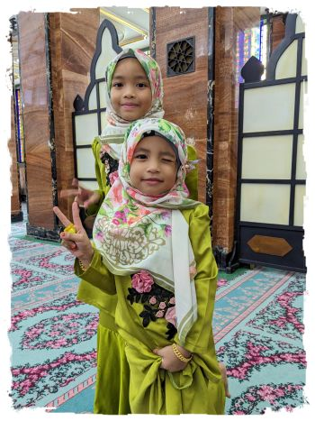

ブルネイ

| Facebookページへは各 |  |
から飛べます |
【マレーシア1】マレーシアは何度か訪れていますがボルネオ島は初めて。自然に満ちた島だということで、初日は40kmほど郊外にあるバコ国立公園に行ってみました。
水井 彰さんの投稿 2023年5月1日月曜日
【マレーシア2】シブからは高速船で陸の孤島カピットという町に行けるそうです。クチンからの船とは異なりこの船は運行しているはずなのでボートターミナルへ向かいます。しかし係員に尋ねるともう船はないとのこと。やれやれ‥
水井 彰さんの投稿 2023年5月3日水曜日
【マレーシア3】ブルネイとの国境のまちミリまでへもバスでは7時間半かかり昼行だと一日潰れます。かつてなら迷わず夜行バスで時間と宿泊費を節約したところですが、もういい歳なので無理せずまた空路を選択しました。
水井 彰さんの投稿 2023年5月4日木曜日
【ブルネイ1】国際バスが廃止なら素直に空路を選択すべきなのでしょうが、今回飛行機だらけだったのでせめて国境くらいは陸路で越えたいと思い調べたところ、個人の車で両国間を往復している人がいたため連絡して乗せてもらうことにしました。
水井 彰さんの投稿 2023年5月6日土曜日
【ブルネイ2】世界一豊かな国とも言われるブルネイ・ダルサラーム。横断歩道では車は必ず止まってくれ、道路にはゴミ一つ落ちていません。そんな国の首都に存在する世界最大の水上集落カンポン・アイールを水上タクシーで訪れました。
水井 彰さんの投稿 2023年5月7日日曜日